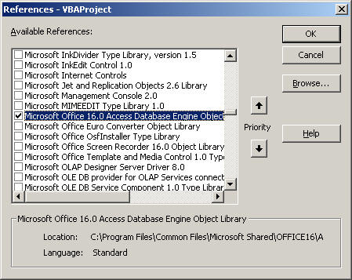
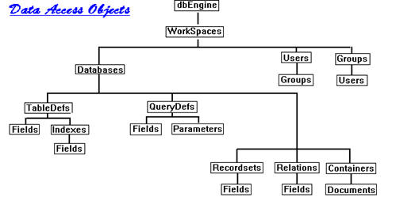
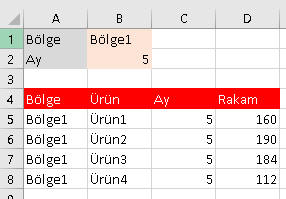
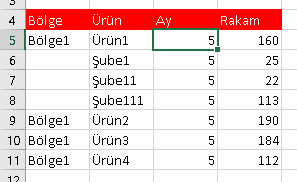

Giriş
Önceki sayfayı okuduysanız DAO’nun MS Accese’e özgü bir API olduğunu anlamış
olmalısınız. Daha önce belirttiğimiz gibi MS Access dışında bir
veritabanına bağlanmak için yeni kodların ADO ile yazılması tavsiye ediliyor
ancak mevcut kodlarınızı ADO’ya çevirmeniz pek bir anlamı yok. Accesse
gelince, kullanımı daha pratik olduğu için ben hala DAO'yu kullanıyorum.
Seçim size kalmış, siz hangisinde kendinizi rahat hissederseniz onu
kullanabilrsiniz.
Motor/Engine
DAO, dataya erişim için JET DB motorunu kullanırdı, ancak 2007 versiyonu
ile birlikte ACE geldi. ACE ile eski mdb dosyalarına da yeni accdb
dosyalarına da erişebileceğiz. Ancak araştırmalarınız sırasında JET’e de
rastlarsanız şaşırmayın.
Şimdi gelin bunu kullanabilmek için neler yapılmalı bir bakalım.
Referans ekleme
Öncelikle DAO kütüphanesini VBA’e eklemek gerekiyor. Personal.xlsb
üzerinde çalıştığımız düşünerek bu dosyadayken aşağıdaki işlemleri yapalım.
Birçok yerde DAO 3.6 ekleyin denir, ama bunların çoğu eski siteler. Artık
Access 2003 kullanan kalmadığını düşünerek bunun yerine Microsoft
Office x.x Access Database Engine Object Library şeklindeki
referansı eklemeniz gerekecektir. Bendeki aşağıdaki gibi Access 2016 olduğu
için 16 versiyonunu ekledim, sizde bu biraz daha farklı olabilecektir. (Not:
"Microsoft Access 16.0 Object Library" olan kütüphane Access nesne modeline erişmemizi sağlar,
buna dikkat edin, isim benzerliği karışıklık yaratabilir, biz
onu eklemiyoruz, "Microsoft Office 16.0 Access Database Engine Object
Library"'sini ekliyoruz)

Nesneler
DAO’daki nesneler veritabanına bağlanmak, dataya erişmek ve veritabanının
yapısını değiştirmek için kullanılır. En tepede DBEngine
nesnesi olan hiyerarşik yapının genel görünümü aşağıdaki gibidir.
DAO Nesne Modeli

Biz bunlardan DBEngine ve Workspace’i hiç kullanmayacağız. Bu yüzden
yaptığımız tüm database işlemleri default workspace üzerinde olmuş olacak.
Farklı oturumlarda farklı workspace açma ihtiyacınız olursa
buradan detay bilgi edinebilirsiniz.
DAO ile çalışırken genel süreç şöyledir:
- Database ve recordset nesnesi tanımlanır,
- DB ataması yapılır,
- DB üzerinden recordset yaratılır,
- Sonrasında dataya erişilir,
- Tüm işlemler bitince recordset ve DB Nothing atanıp kapatılır
Tanımlamalar
DAO ve ADO’nun bazı ortak nesneleri var. O yüzden özellikle iki referansı
da birden kullanıyorsanız mutlaka referans(library) ismini nesnelerin önünde
kullanmanız gerekir, yoksa karışıklık çıkar ve hata alırsınız. Ancak aynı
ismi kullanmayan nesneler için referans belirtmeye gerek yok.
Dim db As DAO.Database '(Bunda DAO’ya gerek yok çünkü ADO’da Database nesnesi yok, karışma olmaz)
ama
Dim rs As DAO.Recordset 'ya da Dim rs As ADODB.Recordset
"DAO"’yu yazmak intellisensin çıkması adına bi kolaylık sağladığı için ben size bunu sürekli kullanmanızı(kafa karışıklığı olmayan durumlarda bile) tavsiye ederim.
Database nesnesi
Öncelikle Dim db As DAO.Database diye tanımladık.
New ifadesi olmadan tanımlama yapılır. Zira yaratımını bir fonksiyon ile
yapacağız.
Bazı kaynaklarda bunun arkadasından Set db = DBEngine(0)(0) diye bir kod
geldiğini görebilirsiniz. Bu “Workspaces(0).Databases(0)” yazmanın kısa yoludur
ama yukarıda belirttiğim gibi biz ikisini de kullanmıycaz, zaten hep default
Wokspace(yani 0 indeksli) üzerinde çalışıyor olucaz.
Bundan sonra gelen kod ise şöyle bir şey olacaktır.
Dim db As DAO.Database
Set db = DAO.OpenDatabase(dbİsmi)
Buradaki metodun OpenDatabase olması sizi
yanıltmasın, gerçekte bir Access penceresi açılmamaktadır. İlgili
database’in bir nevi hafızada açıldığını düşünebilirsiniz.
Bundan sonrasında bu nesneyle ilgili olarak başka bir işimiz olmayacak.
Aslında Database nesnesinin CreateTableDef,
CreateQueryDef gibi tablo ve sorgu yaratmaya yarayan metodları var
ama ben bunların Excel VBA içinden kullanılması gerektiğini düşünmüyorum.
Bizim işimiz daha çok Accesten data okumak ve gerekirse tablolarda
güncelleme yapmak, kayıt eklemek, silmek olacaktır. İhtiyacımız olan tablo
ve sorguları zaten Access üzerinde yaparız diye düşünüyorum. O yüzden bu tür
metodlara değinmeyeceğim. Ender de olarak ihtiyacınız olursa bunlarla ilgili
makaleleri Google’da kolaylıkla bulabilirsiniz. (Belki Access VBA ile ilgili
bir sayfada bu konuda örnekler yapmayı düşünebilirim. Access VBA’i, Excel VBA
kadar sık kullanmasak da zaman zaman oldukça faydasını görmekteyim.)
Veritabanıyla işimiz bitince Close
metodunu kullanarak bağlantıyı kapatırız ve son olarak Nothing ataması ile
belleği boşaltırız. Özetle;
Dim db As DAO.Database
Set db = DAO.OpenDatabase("………..accdb")
'diğer kodlar
db.Close
Set db=Nothing
TableDef
DAO’da tablolarla ilgili iki nesne bulunur;
TableDef(s) ve Recordset.
TableDef(s)
tablolar hakkında metadata sunar. Alanlar, indexler, tablonun adı v.s gibi
işlemler için kullanılır. Tabloların yaratılması ve silinmesi de bununla
yapılır. İçindeki dataya erişim ise RecordSet ile yapılır. Ancak yukarda
belirttiğim gibi biz tabloyla ilgili genel işlere burada girmeyeceğiz. Bu
konuda bilgi lazım olursa yine bir google search yapabilirsiniz.
Keza, Sorgu yaratma gibi sorgu işlemlerinin nesnesi olan QueryDef(s) ile de
çok bi işimiz olmayacak. Bununla beraber bir sorgunun içini okumak istersek
yine RecordSet nesnesini kullanırız.
Recordset nesnesi
DAO’da en çok bu nesneyle haşır neşir olacağız. Çünkü data okuma ve
manipülasyonu bu nesne ile yapılır. O yüzden bunu "Nesneler" başlığı altında
incelemek yerine ayrı bir başlık altında incelemenin daha doğru olduğunu
düşündüm.
Recordset nesnesi bize adından anlaşılacağı üzere belirli bir kayıt seti
verir. Bu tüm bir tablo olabileceği gibi çeşitli filtreler uygulanmış bir
sorgu sonucu da olabilir.
Tanımlama ve Yaratma
RecordSet'i tanımlama klasik değişken tanımıyla yapılır ancak ataması
yapılırken
New kelimesi kullanılmaz, zira bunu başka bir objenin(genelde DB
objesinin) bir metodundan dönen değerle elde
edeceğiz.
4 çeşit yaratma şekli vardır: DB’den,
table'dan, query'den ve başka bir recordsetten. Önce genel syntax'a sonra
parametrelere bakalım.
Syntax:Object.OpenRecordset(Name, [Type], [Options], [LockEdit]).
Name olarak tablo adı sorgu adı girilebileceği gibi SQL de girilebilir.
Dim rs As DAO.Recordset
Set rs = dbobj.OpenRecordset(Type, Options)
Set rs = TableDefObject.OpenRecordset(Type, Options)
Set rs = QueryDef.OpenRecordset
Set rs = RecordsetObject.OpenRecordset(Type, Options) 'varolan rs’de ilave filtre için
Type'a az sonra detaylı bakacağız. Son iki paremetreyi ise neredeyse hiç
kullanmayacağız. Bunların bir kısmının geriye dönük uyumluluk içeren
paremetreler olup bi kısmı ise küçük uygulamlarda çok kullanılmayan
özelliklerdir, daha büyük uygulamalar için zaten Access yerine diğer
Veritabanı uygulamaları kullanılmadlır. Bir şekilde kullanım ihtiyacı
olursa(Ör:aynı anda iki kişinin güncelleme yapması durumundaki davranışı
belirlemek isterseniz) google'da araştırabilirsiniz. Ben hiç ihtiyaç
duymadığım için araştırıp öğrenme zahmetine de girmedim açıkçası, o yüzden
size de anlatamıyorum. Şimdi gelelim Type'a.
Type parametresi: DAO Recordset Tipleri
5 tür tip vardır.
- Table-type recordset(dbOpenTable): Bunlar, düz
tablolara dayanır, yani bu tiple sorgular ve linkli tablolar okunmaz.
Lokal tablolar için varsayılan tip budur. Sadece düz kayıt okuma veya
kayıt ekleme/güncelleme yapacaksanız bunu kullanabilirsiniz ancak diğer işlemlerde bazı
metod ve propertyler(AbsolutePosition, FindFirst v.s) çalışmadığı için
bu işlemlere ihtiyacınız olduğunda bunu kullanamazsınız. Bu tiple yaratım yapıldığında, kayıt bulmak
için Seek metodu kullanılabilir ama
Find ve türevleri kullanılamaz. Seek
kullanımı için indexlerden yararlanırlır, bu yüzden Find metodundan daha
hızlıdır.
- Dynaset-Type(dbOpenDynaset): Tablolara ek olarak
sorgularda ve linkli tablolarda da kullanılır. Linkli tablolar için
varsayılan tip budur. Kayıt bulmak için Find metodu kullanılırken
Seek metodu bunda kullanılamaz.
- Snapshot-type(dbOpenSnapshot): Bi recordset elde
edilmiş ve resmi çekilmiştir, bunun üzerinden kayıt okumak için bu tip
kullanılır. Statik bir veri setine sahip olduğumuz için kayıtlarda güncelleme yapılamaz,
yani read-only bir yöntemdir. Find metodunu
destekler.
- Forward-only-type(dbOpenForwardOnly): Snapshota çok
benzer, sadece ileri doğru okuma yapar.
- Dynamic-type(dbOpenDynamic): DynaSet’e çok benzer.
Farkı şu: O sırada başka kullanıcılar da recordsetiniz için temel
aldığınız tabloda bir güncelleme/ekleme/silme işlemi yaptıysa bunlar da
sizin recordsetinize anında yansır.
Görüldüğü üzere Seek metodunu sadece dbOpenTable tipinde açılmış
recordsetlerde kullanabilir. Bu bağlamda örnek bir veritabanı erişim koduna bakalım.
Sub DAOOrnek()
Dim db As DAO.Database
Dim rs1 As DAO.Recordset, rs2 As DAO.Recordset
Set db = DAO.OpenDatabase(adres + "vbadb.accdb")
Set rs1 = db.OpenRecordset("Data", dbOpenTable)
Set rs2 = rs1.OpenRecordset
End Sub
Tip belirtilmezse, default tipler baz alınır: "Name" olarak verilen
kaynak, bir tablo ise dbOpenTable, linkli tablo ise dbOpenDynaset.
Hangi Tip ne zaman kullanılır?
- Düz okuma, kayıt ekleme, güncelleme yapılacaksa ve/veya Seek ile
hızlı arama yapma ihtiyacı varsa(indeks bulunmalı):dbOpenTable
- Query ve linkili tablolarda yeni kayıt ekleme, güncelleme, silme +
ayrıca Find türevlerini kullanma ihtiyacı varsa:dbOpenDynaset
veya dbOpenDynamic(farkları yukarıda var)
- Küçük veri kümelerinde sadece okuma(ileri geri farketmez)
yapacaksanız ve hızlı kayıt arama ihtiyacı yoksa(yani seek
kullanmayacaksanız): dbOpenSnapshot
- Küçük veri kümelerinde sadece
ileri okuma yapacaksanız
ve hızlı kayıt arama ihtiyacı yoksa(yani seek kullanmayacaksanız)
dbOpenForwardOnly
Field nesnesi(Alanlar)
(Field nesnesi recordsetten bağımsız bir nesne olmakta birlikte hep
onunla kullanıldığı için ayrı bir kısım açmak yerine Recordset kısmı altında
ele almak istedim.) Önceki kısımlarda belirttiğim gibi, Field yaratma,
bunlarda index belirleme gibi konulara girmiyoruz. Bu tür işlemleri VBA
içinden yapmak yerine doğrudan Access'te yaparız, zira bunlar genelde
dinamik olarak değiştirilecek şeyler değildir. Olur da ihtiyaç duyarsanız
MSDN veya googleda bunlara ulaşmak oldukça kolay. Bizim işimiz daha çok bu
alanlara erişmek olacak. Erişimin de 3 yolu bulunmaktadır.
- Alan adı ile:rs.Fields("İsim")
- Alan adı kısayolu ile:rs![İsim]
- Alan item no ile:rs.Fields(1)
rs.Fields(0).Name: İlk kolonun adını yani kolon
başlığını getirir.
rs.Fields(0).Value: Bu ise ilk
kolondaki geçerli kaydın(satırın) içeriğini döndürür. Bu arada Value
özelliği default özellik olup yazılmasa da olur, ama biz iyi bir
programlamacı olup yazıyoruz.
rs.Fields.Count: İlgili
kayıt setindeki alan sayısını verir.
Yeni kayıt, mevcut kaydı düzenleme ve kaydetme
AddNew metodu yeni boş bir satır ekler.
Sonra Field nesnesi ele alınarak ilgili alan atamaları yapılır. Normalde
Acceste manuel kayıt ekledikten veya değiştirdikten sonra onu kaydetme(save
etme) diye birşey yoktur ancak VBA’de ismi “Save” olmasa bile bi kaydetme
işlemi var, onu da Update metodu ile
yapıyoruz
Bir recordsete yeni kayıt eklendiğinde geçerli(aktif) kayıt otomatikman
yeni eklenen kayıt olmaz. Bunun için yeni kayda çapa atarak erişmemiz
gerekir. Bunla ilgili detayları az aşağıda göreceğiz.
rs.AddNew
'ilgili alan atamaları yapılır
rs.Update 'Kayıt işlemi gerçekleşir
rs.Bookmark = rs.LastModified 'çapayı attık, şimdi yeni kayıt üzerinde çalışabiliriz
Edit metodu kaydı değiştirir(Accesteki
Update sorgusunun muadilidir). Az önce belirttiğim gibi Update metodu
yapılan değişkliklerin yansımasını sağlar, Update Query ile
karıştırılmaması lazım. Yani isim benzerliği kafanızı karıştırmasın.
Özetle; Accessteki Update Sorgu işlemi DAO'nun Edit metodu ile yapılırken, Acceste otomatik
gerçekleşen Save işlemi
DAO'nun
Update metodu ile yapılır.
'yeni kayıt
rs.AddNew
rs.Fields(0) = "3333"
rs.Fields(1) = "Aksaray"
rs!Durum = "Açık" 'bu !'li yazım "."lı yazıma alternatif yöntemdir
rs.Fields("Bölge kodu") = 7030
rs.Update 'bunu demeden kayıt eklenmez
'Editleme
rs.Edit
rs.Fields("Bölge kodu") = 5555
rs.Update 'bunu demeden update etmez
Silme
Kayıtlarda dolaşırken cursor'ın bulunduğu kaydı silmek için
Delete metodunu kullanıyoruz. Silme
işlemini yapabilmek için recordseti Table veya Dynaset tipinde açmış
olmak gerekiyor, aksi hade hata alınır.
Silme işlemi soucunda sonraki kayıt otomatikman geçerli kayıt olmaz, o
yüzden ilgili işlemden sonra MoveNext yapmanız gerekir.
Aşağıdaki örnekte Durum kodu 0 olan kayıtlar siliniyor.
'ön tanımlar
If Not (rs.EOF And rs.BOF) Then
Do While Not rs.EOF
Durum = rs.Fields(3).Value
If Durum = 0 Then
rs.Delete
End If
rs.MoveNext
Loop
End If
Silme işlemini, belli kriterleri sağlayan kayıtlar için yapacaksanız ben
SQL metni çalıştırmanızı(SQL biliyorsanız tabi) tavsiye ederim. (Bunun detaylarını
aşağıda göreceğiz.)
Mesela yukardaki örnekte kayıtları silmek için şu kodu çalıştırmak bana
daha pratik geliyor.
'ön tanımlar
db.Execute "Delete from tabloadı where Durum=0"
Kayıtlarda dolaşma
Move metodu ile belli satırlardaki kayıtlara konumlanma
Move metodu, belirli bir satır
numarasıyla kullanılabileceği gibi Move’un türevleri şeklinde de
kullanılabilir.
Rs.Move 10 '10 kayıt aşağı konumlanır, 10.kayda değil(negatif olursa geriye doğru hareket)
Rs.Move 0 'olduğu yerde kalır
Rs.MoveFirst 'ilk kayda konumlanır
Rs.MoveLast 'son kayda konumlanır
Rs.MoveNext 'bir sonraki kayda konumlanır. Özellikle döngülerde satır satır ilerlerken kullanılır.
Rs.MovePrevious 'bir önceki kayda konumlanır
Bunları kullanırken BOF ve EOF ile birlikte kullanımı tavsiye edilir.
BOF & EOF
BOF, ilk kayıttan önceki bir pozisyonda
olup olmadığınızı, EOF da son kayıttan
sonraki bir pozisyonda olup olmadığınızı gösterir. Kullanım amacı da tabloda
hareket ederken tablonun sınırları içinde kalıp kalmadığınızı görmektir.
İkisi de True olursa geçerli kayıt yok demektir. O yüzden bir recordset
içinde kayıt olup olmadığını her ikisinin de False olması veya Not True
olması şeklinde aşağıdaki gibi test ederiz.
If Not (rs.EOF And rs.BOF) Then
'kodlar
End If
If crst.EOF=False And rst.BOF=False Then
'kodlar
End If
RecordCount
BOF ve EOF'un amacı, RecordSet içinde kayıt olup olmadığını anlamaktan
ziyade(dolaylı olarak bu amaca da hizmet edebilirler), hareket sonrasında tablonun dışına çıkıp çıkmadığımızdır.
Recordsette kayıt olup olmadığını görmek için
RecordCount özelliğini kullanıyoruz.
Dikkat:Recordsetimizi TableType tipinde
açtıysak, RecordCount sorunsuz çalışır. Ancak DynasetType veya diğer
tiplerde açtıysak
RecordCount property’si o ana kadar erişilen kayıtların sayısını getirir; ve
bu tipte açılan recordsetlerde ilk kayda gelindiğinde VBA kodu okunmaya devam
eder. Bu yüzden recordseti açtıktan hemen sonra kayıt sayısını elde etmeye
çalışırsak sonuç hep 1 döner. Bunun için Dynaset tipinde(ve
diğerlerinde) açıldığında
önce MoveLast ile son kayda konumlanmalı ondan sonra RecordCount'ı elde etmeye
çalışmalıyız. Bununla birlikte büyük tablolarda bu yöntem çok vakit alan bi
iş olabilir, o yüzden dikkatli kullanılmalıdır.
Bu noktada ilk önerim, eğer başka nedenlerle gerekli değilse tabloyu
DynasetType tipinde(veya diğer tiplerde) değil TableType tipinde açın. Diyelim ki DynasetType
tipinde açtık, o zaman ikinci önerim de şudur: Eğer amacınız gerçekten kayıt
sayısını elde etmekse MoveLast ise son kayda gidin(büyük tablolarda
performans sorunu yaşatabilir) ama amacınız “içerde
kayıt varmı yok mu” diye bakmaksa sonucun 1 dönmesi yeterlidir, MoveLast’a
gerek yoktur, bu yüzden sade bir “RecordCount >0 mı?” kontrolü yaparsınız, o kadar.
BookMark, LastModified
Daha sonra dönmek üzere geride bıraktığınız bir kayda bookmark aracılığı
ile ulaşabilirsiniz. Hem okunur hem yazılır bir özelliktir.
Geçerli kaydı
bir Bookmark olarak atamak için, önceden kaydedilmiş bir bookmark
kullanılabileceği gibi LastModified özelliği
ile en son değişitirilmiş/eklenmiş kayıt da atanabilir. Aşağıdaki örnekte
AbsolutePosition özelliği de kullanılmış
olup kaydın o anki satır numarasını verir. AbsolutePosition, dbOpenTable
tipinde çalışmaz, dbOpenDynaset olmalı.
Sub dao_bookmark()
Dim db As DAO.Database
Dim rs As DAO.Recordset
Set db = DAO.OpenDatabase("….\daodeneme.accdb")
Set rs = db.OpenRecordset("şubeler", dbOpenDynaset)
Debug.Print rs.AbsolutePosition
rs.MoveNext
Debug.Print rs.AbsolutePosition
rs.MoveNext
Debug.Print rs.AbsolutePosition
rs.MoveNext
Debug.Print rs.AbsolutePosition
x = rs.Bookmark 'çapa atıyoruz
Debug.Print rs.AbsolutePosition
rs.Move 500 'çeşitli işlemler sonucunda şuan 500 kayıt aşağı geldik diyelim
Debug.Print rs.AbsolutePosition
rs.Bookmark = x 'tekrar çapamıza dönüyoruz
Debug.Print rs.AbsolutePosition
'son değişen kayıt
rs.Move 80
rs.Edit
rs.Fields("Bölge kodu") = 3333
rs.Update
Debug.Print rs.AbsolutePosition
rs.Move 200
Debug.Print rs.AbsolutePosition
rs.Bookmark = rs.LastModified
Debug.Print rs.AbsolutePosition
rs.Close
db.Close
Set rs = Nothing
Set db = Nothing
End Sub
Döngüsel Örnek
Gerçek dünyada kayıtlarda döngüsel olarak dolaşmak pek daha olasıdır. O
yüzden şimdi bir de döngüsel örnek yapalım.
Sub dao_tablolardadolas()
Dim db As DAO.Database
Dim rs As DAO.Recordset
Dim tdf As DAO.TableDef
Set db = DAO.OpenDatabase(adres + "vbadb.accdb")
Set rs = db.OpenRecordset("data")
'başlangıçta kaç kayıt var bakalım
Debug.Print rs.RecordCount
'önce geçici kayıt ekleyelim
For i = 1 To 3
rs.AddNew
rs.Fields(0) = "deneme bölge" & i
rs.Fields(1) = "deneme şube" & i
rs.Fields(2) = "deneme ürün" & i
rs.Fields(3) = 3 - i
rs.Update
Next i
Debug.Print rs.RecordCount
If Not (rs.EOF And rs.BOF) Then
Do While Not rs.EOF
Durum = rs.Fields(3).Value
If Durum = 0 Then
rs.Delete 'Durum=0 olan kayıtlar silinir
End If
rs.MoveNext
Loop
End If
Debug.Print rs.RecordCount
End Sub
Seek ve Findek ile kayıt arama
DAO, kayıtları bulmanın iki
yolunu bize sunuyor. Seek ve
Find türevleri. Bunların kullanımı, Recordset
oluşturulurken kullanılan tipe göre değişmektedir. Öncelikle şu ayrımı iyi
yapmak gerekiyor. Ne zaman Recordset, ne zaman SQL, ne zaman diğer metodlar?
- Eğer yapabiliyorsak recordsetimizi direkt aradığımız kayıt üzerine
oluşturmalıyız. Yani bir SQL ile tek satır döndüren bir recordset
tanımlayabiliriz.
- Eğer daha geniş kümeli bir recordsetimiz olacak
ve bunu çeşitli aşamalarda farklı şekillerde filtrelemeye/araştırmaya tabi
tutacaksak
- Recordsetin recordsetini yapabileceğimiz gibi
- Aşağıaki diğer arama yöntemlerini kullanabiliriz
Seek Metodu
Recordset tipi olarak sadece TableType
seçildiyse kullanılabilir. Çünkü tablodaki indekslere ihtiyaç duyar ve doğal
olarak da kolonlardan en az birinde indeks olması gerekir. O yüzden Seek
metodu uygulanmadan önce Indeks property’si belirtilir. İndeksli arama da en
hızlı yöntem olduğu için Find’a göre daha hızlı bir yöntemdir. Tabiki
Acceste ilgili tabloda ilgili kolonda indeks olduğundan emin olmalısınız. Bu
arada PrimaryKey dışındaki kolonlarda indeks adı genelde kolonadı ile aynı
olurken, PrimaryKey olan bir kolonda indeks adı "PrimaryKey" olur, o yüzden
indeks olarak da bu şekilde belirtmelisiniz.
Parametre
olarak "=","<",">" gibi karşılaştırma işaretleri ve aranan değer girilir.
Aradığımız değere konumlanma girişiminin başarılı olup olmadığını
NoMatch özelliği ile
test ederiz. Eğer True dönerse aranan kriterlere göre uygun kayıt
bulunamamıştır demektir.
Sub dao_seek()
Dim db As DAO.Database
Dim rs As DAO.Recordset
Set db = DAO.OpenDatabase(adres + "vbadb.accdb")
Set rs = db.OpenRecordset("Data", dbOpenTable)
rs.Index = "Şube Adı" 'index belirtiyoruz
rs.Seek "=", "Şube115"
If rs.NoMatch Then 'konumlanma başaraılı mı diye kontrol ediyoruz
Debug.Print "Kayıt bulunamadı"
Else
Debug.Print rs.Fields("Aylık Gerç")
End If
rs.Close
db.Close
Set rs = Nothing
Set db = Nothing
End Sub
Find türevleri
Move’un aksine Find’ın solo halde bir versiyonu yoktur. 4
çeşidi vardır. FindFirst,
FindPrevious, FindNext, and
FindLast. Find
kullanımı için Recordsetimizin Tabletype dışındaki bir tiple tanımlanması
gerekir. Genellikle Dynaset yeterlidir.
Indeks kullanmak zorunda
değildir, bu yüzden indekssiz bir kolonda arama yaptığınızda Seek metoduna
göre çok daha yavaş çalışır.
Find metodlarıyla "?" ve "*" gibi joker
karakterleri kullanabiliyoruz.
Sub dao_find()
Dim db As DAO.Database
Dim rs As DAO.Recordset
Set db = DAO.OpenDatabase(adres + "vbadb.accdb")
Set rs = db.OpenRecordset("data", dbOpenDynaset)
rs.FindFirst "[Şube Adı] LIKE '*deneme*'"
If rs.NoMatch Then
Debug.Print "Kayıt bulunamadı"
Else
Debug.Print rs.Fields("Şube Adı")
End If
rs.Close
db.Close
Set rs = Nothing
Set db = Nothing
End Sub
Ben bu metodların bi karşılaştırmasını yaptım. Buna göre 5
milyon kayıtlık bir tabloda;
- indekssiz bir kolonda FindFirst araması
yapmak 127 sn,
- indeksli kolonda FindFirst yapmak 1,5 sn,
- (İndeksli kolonda) Seek
ile arama yapmak ise 0,04 sn sürüyor.
Gördüğünüz gibi indeksli olması
her halükarda hızı inanılmaz arttrıyor, ancak Seek’in Find’a göre üstünlüğü
ise aşikar. Mutlak değer olarak fazla bir fark olmasa da oransal fark çok
büyük.
SQL
Aranan değeri bulmada bir diğer yöntem, Recordseti çekerken
tek sonuç döndürecek bir SQL çalıştırmaktır. Veya çoklu sonuç dönecekse de
MoveFirst diyerek ilk kaydın sonucunu almak olacaktır. Veya zaten çok sonuç
arıyorsak da çoklu sonuç dönen bir SQL hazırlanır.
Filter ile Recordseti filtreleme
Her ne kadar filtreleme ve sıralama işlemlerini SQL metni içnde
yapmamızda fayda olsa da bazen recordset üzerinden de bunları yapmamız
gerekebillir. Biz burada sadece Filtreleme işlemine bakacağız.
Öncelikle belirtmek isterim ki Filter işlemini dbOpenTable tipinde
açılmış bir recodsette yapamıyoruz. Diğer tiplerde açılmış olması gerekir.
Bu işlem için tahmin edileceği üzere Filter property'si kullanılır. Bunun
içine
SQL metninde yazacağımız gibi bir kriter yazarız. Eğer ki kolon adımız 1'den
çok kelimeden oluşuyorsa bunları [] içine yazarız.
Aşağıda ADO kısmında göreceksiniz, orda da Filter işlemi yapılıyor ancak
DAO'da ADO'dan farklı olarak uygulanış şekli biraz farklıdır. DAO'da iki
farklı recordsetimizin olması gerekir. İlk recordsetin Filter property'sine
kriterler girilir ve ikinci recordset bu ilk recordsetten filtrelenmiş
şekilde elde edilir. Hemen örneğimize bakalım.
Sub dao_filter()
Dim db As dao.Database
Dim rs As dao.Recordset
Dim rsFilter As dao.Recordset
Set db = dao.OpenDatabase(adres + "vbadb.accdb")
Set rs = db.OpenRecordset("data", dbOpenDynaset)
rs.Filter = "[Ürün Adı]='Ürün1'"
Set rsFilter = rs.OpenRecordset
rs.MoveLast
Debug.Print rs.RecordCount '1868
rsFilter.MoveLast
Debug.Print rsFilter.RecordCount '466
End Sub
NOT:Tarihsel alanları mutlaka Amerikan formatında(ay-gün-yıl) girilmesi
gerekiyor.
Execute ile
Sorgu/SQL çalıştırma
Execute metodu ile doğrudan basit bir SQL veya varolan bir
eylem sorgusu(Append,Delete,Update) çalıştırılabilir. Hem Database nesnesi
hem de QueryDef nesnesi için kullanılabilen bir metoddur.
Sub Dao_Execute()
Dim db As DAO.Database
Set db = DAO.OpenDatabase(adres + "vbadb.accdb")
db.Execute "Query1" 'veya açık bir şekilde SQL metni
' veya db.QueryDefs(0).Execute
db.Close
Set db = Nothing
End Sub
Execute’la birlikte
kullanılan parametreler var. Biz bunlara burada girmeyceğiz, detay bilgi
edinmek istiyorsanız
şuraya
bakabilirsiniz.
Ayırca yukarıda belirttiğimiz gibi, Filter işlemlerini mümkün olduğunca
SQL içinde çalıştırmak daha hızlı sonuç almamızı sağlar, özellikle büyük
veri kümelerinde. Eğer ki bu elde ettiğimiz veri setinde, farklı case'lere
göre dinamik filtrelemeler yapmak gerekirse o zaman Filter'ı devreye
sokabiliriz.
Datayı Excel’e almak(Import işlemi)
DAO
kullanımında en sık yapacağımız işlem, eriştiğimiz datayı Excel içine almak
olacaktır. Bunun için de birkaç yöntem bulunuyor.
1.yöntem: CopyFromRecordset metodu
Bu yöntem en hızlı yöntemdir. Çoğu durumda bu yeterli
olmaktadır.
Syntax: Range.CopyFromRecordset(Data, [MaxRows],
[MaxColumns])
Burda önemli olan husus, başlıkların gelmiyor oluşudur. Başlık için
döngüsel bir kod yazılır. MaxRows ve MaxColumns ile çekilen kayıt sayısı
sınırlandırılabilir.
Sub import1()
Dim db As DAO.Database
Dim rs As DAO.Recordset
Set db = DAO.OpenDatabase(adres + "vbadb.accdb")
Set rs = db.OpenRecordset("data", dbOpenTable)
If Not (rs.EOF And rs.BOF) Then
'başlık yazma kısmı
For i = 0 To rs.Fields.Count - 1
ActiveCell.Offset(0, i).Value = rs.Fields(i).Name
Next i
'şimdi de data yazılır
ActiveCell.Offset(1, 0).Select
ActiveCell.CopyFromRecordset rs
End If
rs.Close
db.Close
Set rs = Nothing
Set db = Nothing
End Sub
2.yöntem: Diziye atayıp diziyi yazdırmak
Bu yöntem 2. en hızlı yöntemdir. Eğer
diziye atadıktan sonra diziyi başka yerde de kullanacaksanız veya dizi
elemanları üzerinde işlem yaptıktan sonra Excel'e aktaracaksanız bu yöntemi
kullanabilirsiniz.
Sub import2()
Dim db As DAO.Database
Dim rs As DAO.Recordset
Dim hucreler() As Variant
Dim alan As Range
Set db = DAO.OpenDatabase(adres + "vbadb.accdb")
Set rs = db.OpenRecordset("data", dbOpenTable)
ReDim hucreler(rs.RecordCount - 1, rs.Fields.Count - 1)
'başlık yazma kısmı
For i = 0 To rs.Fields.Count - 1
ActiveCell.Offset(0, i).Value = rs.Fields(i).Name
Next i
'diziyi dolduralım
If Not (rs.EOF And rs.BOF) Then
Do While Not rs.EOF
For i = 0 To rs.Fields.Count - 1
hucreler(j, i) = rs.Fields(i).Value
Next i
j = j + 1
rs.MoveNext
Loop
End If
'excele yazalım
Set alan = Range("A2").Resize(UBound(hucreler, 1), UBound(hucreler, 2) + 1)
alan.Value = hucreler
rs.Close
db.Close
Set rs = Nothing
Set db = Nothing
End Sub
3.yöntem: GetRows metodu ile dizi elde ederek
GetRows ile iki boyutlu bir dizi elde ederiz. Boyutlardan ilki kolonu, ikincisi satır
numarasını ifade eder. Tek kolonluk bir veri çekseniz bile 2 boyutlu bir diziniz olur.
Rs.GetRows tüm recordseti döndürürken Rs.GetRows(x)
ilk x kaydı diziye aktarır. Mesela ilgili veri kümesinden sadece örnek bir
küme almak istiyorsanız 100 satırlık data çekebilirsiniz. GetRows, Move
metodu gibi davranır, yani parametre olarak 100 derseniz 100. kayda gelir.
Sub import3()
Dim db As DAO.Database
Dim rs As DAO.Recordset
Dim dizi As Variant
Set db = DAO.OpenDatabase(adres + "vbadb.accdb")
Set rs = db.OpenRecordset("data", dbOpenTable)
If Not (rs.EOF And rs.BOF) Then
dizi = rs.GetRows(10) 'ilk 10 kayıt
Debug.Print dizi(0, 0) 'ilk kolon ilk satır
Debug.Print dizi(rs.Fields.Count - 1, UBound(dizi, 2)) 'son kolon son satır
End If
rs.Close
db.Close
Set rs = Nothing
Set db = Nothing
End Sub
Yukarıda belirttiğim gibi, tek kolon çeken bir SQL'iniz bile olsa iki boyutlu
bir dizi elde edersiniz. Diyelim ki böyle bir veri çektiniz ve ihtiyacınız da, bu veri setini
aralarında ";" işareti olacak şekilde birleştirmek. Bunu döngüsel olarak dolaşıp yapabileceğiniz gibi
WorksheetFunction.Index fonksiyonundan da yararlanabilirsiniz.
Örneğin, diyelimki çektiğiniz veri seti bazı müşteri numaları olsun. Bunları aralarında ";" olacak
şekilde birleştirmek için şöyle bir kod yazabiliriz:
'önceki kodlar
rs.Open strSQL,con,adOpenStatic,adLockOptimistic
müşteriler=rs.GetRows
müşteriStr=Join(WorksheetFunction.Index(müşteriler,0),";")
'sonraki kodlar
4.yöntem: Range’e döngüsel şekilde yazdırma
En yavaş
yöntemdir. Dizilerle çalışmayı bilmiyorsanız veya hücreler üzerinde başka
işlemler de yapacaksanız bu yöntemi kullanabilirsiniz ancak büyük data
kümelerinde tavsiye edilmez.
Sub import4()
Dim db As DAO.Database
Dim rs As DAO.Recordset
Set db = DAO.OpenDatabase(adres + "vbadb.accdb")
Set rs = db.OpenRecordset("data", dbOpenTable)
'başlık yaz
For i = 0 To rs.Fields.Count - 1
ActiveCell.Offset(0, i).Value = rs.Fields(i).Name
Next i
If Not (rs.EOF And rs.BOF) Then
ActiveCell.Offset(1, 0).Select
k = ActiveCell.Row
Do While Not rs.EOF
For i = 0 To rs.Fields.Count - 1
Cells(k, i + 1).Value = rs.Fields(i).Value
Next i
k = k + 1
rs.MoveNext
Loop
End If
rs.Close
db.Close
Set rs = Nothing
Set db = Nothing
End Sub
Exceldeki datayı Accese atma(Export işlemi)
Bunda iki yöntem uygulanabilir.
1.Yöntem:Döngü içinde Addnew+update
Sub export1()
Dim db As DAO.Database
Dim rs As DAO.Recordset
Set db = DAO.OpenDatabase(adres + "vbadb.accdb")
Set rs = db.OpenRecordset("exporttable", dbOpenTable)
For k = 2 To [a1].End(xlDown).Row
rs.AddNew
For i = 1 To [a1].End(xlToRight).Column
rs.Fields(i - 1) = Cells(k, i).Value
Next i
rs.Update
Next k
rs.Close
db.Close
Set rs = Nothing
Set db = Nothing
End Sub
2)Access sorgusunu
çalıştırmak.
Bu yöntem DAO'ya ait bir örnek değildir aslında. Burada Access nesne
modeline girmiş oluyoruz. Çok basit bir mantığı var. Aşağıdaki kodda
yorumlara bakın lütfen.
Bu arada bu yöntemde mevcut Excel dosyasını Access'e linklemiş olmak gerekir.
Sub export2()
Set accessApp = GetObject(adres+"vbadb.accdb", "Access.Application") 'İlgili access dosyasını bir değişkene atıyoruz, ama bunu uygulama olarak atıyoruz
With accessApp
.Application.Visible = False 'Arka planda çalışsın istiyoruz
.DoCmd.Openquery "AppendQuery1" 'DoCmd metodu ile kayıtlı bir sorguyu çalıştırıyoruz
.Run "Modül1" 'Run metodu ile Access VBA ile yazımış bir kodu çalıştırıyoruz
End With
End Sub
Access sorgusunu çalıştırmanın bir yöntemi de aslında yukarıda
gördüğümüz Execute metodudur.
Sub export3()
Dim db As dao.Database
Dim rs As dao.Recordset
Set db = dao.OpenDatabase(adres + "vbadb.accdb")
Set rs = db.OpenRecordset("data", dbOpenDynaset) 'açılış tipi dynaset
db.Execute "srg_exceldekiniburayaappend"
rs.Close
db.Close
Set rs = Nothing
Set db = Nothing
End Sub
Örnek Çalışma - İnteraktif Veri Çekme Formatı
Şimdi DAO ile interaktif bir şekilde, yani parametreleri dinamik
şekilde değiştirerek nasıl veri çekilir, buna ait bir örnek yapmak
istiyorum.
Bu örnekte, bir tablodan bir bölgenin belli bir aydaki çeşitli
ürünlerine ait rakamlarını çekiyoruz. Ürünlerden birine çift
tıkladığımızda da şube detayı gösteriliyor. ürüne tekrar çift
tıklandığında şubeler kaybolup tekrar ilk haline dönüyor.
Bir seçim sonunda görünen tablo aşağıdaki gibidir.

B5 hücresindeki Ürün1'e çift tıklanınca tablo aşağıdaki şekle
dönüşüyor,

Kod bloğumuz aşağıda duruyor. Buna göre;
- Önce global değişkenlerimizi(biri sabit) yaratıyoruz
- Sonra Bölge veya Ay bilgileri dğeiştiğinde(Bunlar B1 ve B2
hücrelerinde bulunuyor) Change event'ini tetikliyoruz.
- Sonra da çift tıklama eventini handle ediyoruz.
Her iki event prosedürünü de başına breakpoint koyup F8 ile
ilerleyerek kodu incelemenizi tavsiye ederim.
Dim db As dao.Database
Dim rs As dao.Recordset
Const adres As String = "C:\inetpub\wwwroot\aspnettest\excelefendiana\Ornek_dosyalar\Makrolar"
'--------Bölge ve Ay bilgileri değiştiğinde tetiklenecek prosedür
Private Sub Worksheet_Change(ByVal Target As Range)
'yanlışlıkla başka bir hücreye çift tıklarsa onun içine girmiş olur ve burası tetiklenir
If Target.Row = 4 Then Exit Sub 'başlığa çift tıklanırsa
If IsEmpty(Target) Then Exit Sub 'bir de herhangi boş bir hücreye çift tıklanırsa
Application.EnableEvents = False
Range("a4").CurrentRegion.Offset(1).Clear 'önce temizlik
If Not Intersect(Target, Range("B1:B2")) Is Nothing Then
[a5].Select
Set db = dao.OpenDatabase(adres + "\BölgeŞubeRakamları.accdb")
mySql = "select * from bölgerakam where Bölge='" & Range("bölge") & "' and Ay=" & Range("ayno")
Set rs = db.OpenRecordset(mySql)
ActiveCell.CopyFromRecordset rs
End If
Application.EnableEvents = True
End Sub
'----Ürün bilgisine çift tıklandığında tetiklenip şube detayını gösterecek olan prosedür
Private Sub Worksheet_BeforeDoubleClick(ByVal Target As Range, Cancel As Boolean)
If IsEmpty(Target.Offset(1, -1)) And Not IsEmpty(Target.Offset(1, 0)) And Not IsEmpty(Target.Offset(0, -1)) Then
Application.EnableEvents = False
Do
ActiveCell.Offset(1, 0).EntireRow.Delete
Loop Until Not IsEmpty(ActiveCell.Offset(1, -1))
Application.EnableEvents = True
Target.Offset(0, 1).Select
Exit Sub
End If
If Not Intersect(Target, Range([b5], [b5].End(xlDown))) Is Nothing And Not IsEmpty(Target.Offset(0, -1)) Then
Application.EnableEvents = False
Set db = dao.OpenDatabase(adres + "\BölgeŞubeRakamları.accdb")
mySql = "select şube,ay,rakam from şuberakam where Bölge='" & Range("bölge") & "' and Ay=" & Range("ayno") & " and ürün = '" & Target.Value2 & "'"
Set rs = db.OpenRecordset(mySql)
'Debug.Print rs.Type
rs.MoveLast 'bir üst satırdaki ' işaretini kaldırıp F8 ile ilerlersek
'görürüz ki recordsetin tipi dynaset, o yüzden recordcoutn ele etmek için en sona konumlanmalıyız
şubeadet = rs.RecordCount
For i = 1 To şubeadet
Target.Offset(1, 0).EntireRow.Insert Shift:=xlDown, CopyOrigin:=xlFormatFromLeftOrAbove
Next i
rs.MoveFirst
Target.Offset(1, 0).CopyFromRecordset rs
Target.Offset(0, 1).Select
Application.EnableEvents = True
End If
End Sub
Giriş
Yukarıda belirttiğim
gibi Access dışındaki yeni çalışmalarınızda ADO’yu kullanmanızı
öneriyorum(hatta isterseniz Access’te bile ADO’yu kullanabilirsiniz, ancak
DAO Accese özgü olduğu için daha hızlıdır ve esnektir. Ben iki şeyi bilmekle
uğraşmayayım sadece tek şeyi bileyim diyorsanız ADO size yeter, sadece
ADO’yu öğrenin)
Referans ekleme
ADO’yu çalışmalarınızda
kullanabilmek için buna ait Library’nin reference olarak eklenmesi
gerekir. İşletim sisteminin versiyonuna göre uygun library seçimi yapılır,
genelde en yüksek versiyon seçilir. Windows 7 ve sonrası için 6.1 gibi.
Ancak yapacağınız çalışmayı başka kişiler de kullanacaksa ve onlar sizin
işletim sisteminden daha aşağı seviyelerde bi işletim sistemi
kullanıyorlarsa siz de ya daha düşük versiyonu seçmeli
veya Late Binding yöntemini kullanmalısınız..
NOT:DAO’daki TableDef ve QueryDef nesneleriyle yapılan DB seviyesindeki
işlemleri ADO ile yapamıyoruz. Bunun yerine ADOX librarysi eklenmelidir. Ama
bu tür işlemler zaten konumuzun dışında olduğu için burada buna hiç
girilmeyecektir.
Yakından bakış
Genel mantık DAO’ya benzer. Bundaki süreç ise şöyledir:
- Connection yaratılır
- Recordset yaratılır
- Kayıtlara erişilip işlem yapılır
- Recordset ve Connection kapatılır
Gördüğünüz
gibi burada Database nesnesi yok, onun yerine Connection nesnesini
kullanıyoruz.
En başta belirttiğim gibi ADO, MS’un en güncel data erişim
teknolojisidir ancak ADO bunu tek başına yapmaz, OLE DB Provider denen bir
aracı teknoloji ile yapar. Genelde her data kaynağı için ayrı bir OLE DB
sağlayıcısı vardır, ancak MS’taki abiler ODBC bağlantı türü(Genel amaçlı
provider) için de OLE DB sağlayıcısı yapmışlar, böylece ADO ile her tür veri
kaynağına bağlanılabilmektedir.
Datayı manipüle etmede kullanılan ve
arkaplandaki esas yazılıma DB Engine(VT motoru) deniyor. Access, DB Engine
olarak Jet (Joint Engine Technology) kullanır. 2003 öncesi versiyonlarda bu,
Jet 4.0 OLE DB provider iken 2007 sonrasında (.accdb database),
"Microsoft.ACE.OLEDB.12.0" oldu, ACE (Access Connectivity Engine).
Bu
arada sadece Accese değil, daha önce söylediğimiz gibi bir metin dosyasına
hatta bir Excel dosyasına bile ADO ile bağlanabiliriz.
Daha detaylı bilgiye
buradan ulaşabilirsiniz.
Nesneler
ADO Nesne modeli
ADO’daki nesne
sayısının daha az olduğunu ama metod sayısının çok olduğunu söylemiştik. Temel nesnemiz
Connection’dır. Bunun Open ve Close metodları vardır.
Recordset nesnesi ile DAO'da olduğu gibi dataya erişiriz ve gerektiğinde onu işleriz
(Update,Delete..)
Record nesnesi, Recordsetteki bir satır kaydı gösterir.
Fields Collection’ı tablodaki tüm kolonları gösterirken, Field nesnesi, bu
kolonlardan herhangi birini ifade eder.
DAO konusunu anlatırken de
bahsetmiştik. Bu objeleri nesneleri tanımlarken başlarına library’sini(DAO için DAO, ADO için ADODB) koymakta fayda var, özellilkle ilgili
VBA projesi içinde hem DAO hem ADO refere edildiyse. Bazıları için nesne
isimleri ortak olmamakla ve bir karışıklığa neden olmamakla birlikte bu
alışkanlık iyi bir alışkanlıktır.(Sadece ADO’cu olmaya karar verdiyseniz
gerek yok tabi)
DAO ile ADO nesneleri arasındaki farkları ve benzerlikleri
şu sitede bulabilirsiniz.
Bu arada önemli bir husus da şu: Nesnelerin isimleri aynı olabilir ama
metod ve propertyler farklıdır. Yani aynılar diye kullanım şekilleri de aynı
olmak zorunda değil.
Şimdi bu nesnelere yakından bakalım.
Connection
nesnesi
Tanımlama ve Yaratım
DAO’da Database nesnini yaratırken New
keywordunu kullanmıyorduk. Çünkü DAO’da
nesnelere Set atamasını yaparken bir fonksiyon(OpenDataBase) ile yaratıyorduk.
Ancak ADO’da ise yeni(New) Connection nesnesini yaratıp, bu nesnenin kendi
Open metodu ile bağlantıyı açıyoruz.
'Earlybinding
Dim con As New ADODB.connection 'tek satır
'Veya iki satırda
Dim con As ADODB.connection
Set con = New ADODB.connection
'Late binding
Dim con As Object
Set con = CreateObject("ADODB.Connection")
Connection nesnesini Open metodu ile başlatırız(açarız). DAO’dan farklı
olarak sadece Accese değil başka veritabanlarına da ulaşabildiğimizi
söylemiştik. Bunun için Connection String denen bir ifadeye ihtiyaç duyarız.
Syntaxı aşağıdaki gibidir.
ConnectionObject.Open ConnectionString,
UserID, Password, Options.
Genelde ilk parametre yani ConnectionString
yeterlidir. Bunun da Provider ve Datasource değerlerini(ODBC için Driver ve
DBQ değerlerini) girmek yeterlidir.
Şimdi çeşitli conneciton yaratma
alternatiflerine bakalım. Bunlarda Access veritabanına OLEDB ile
bağlanacağız.
Sub adoconyarat()
Dim con As ADODB.connection
Dim strDB As String
Set con = New ADODB.connection
strDB = adres + "vbadb.accdb"
' ConnectionString propertysini belirterek
With con
.ConnectionString = "Provider = Microsoft.ACE.OLEDB.12.0; data source=" & strDB 'oledb için
' odbc için:
'.ConnectionString = "Driver={Microsoft Access Driver (*.mdb, *.accdb)};Dbq=" & strDB
.Mode = adModeRead
.Open
End With
'....
con.Close
End Sub
veya connection string yerine provider ve datasource ayrı ayrı belirtilerek;
With con
.Provider = "Microsoft.ACE.OLEDB.12.0"
.Properties("Data Source ") = strDB
.Mode = adModeRead
.Open
End With
Aşağıda Access dışındaki diğer data kaynaklarına
bağlanırken kullanılan ConnectionString’leri görebilirsiniz.
Diğer
bağlantı türleri için http://www.connectionstrings.com sitesine
bakabilirsiniz, ancak biz aşağıda zaten birkaç türünü göreceğiz. Şimdi
bunlara bakalım.
Excel dosyalarına ulaşmak
ADO ile
başka Excel dosyalara da ulaşabilip veri alabilmekteyiz. Tabi isterseniz bu
işlemi ilgili dosyayı yine makro ile
açıp sonra copy paste yaptırıp kapatma veya bir sonraki sayfada göreceğimiz gibi
refreshlenebilir bir Connection kurma yoluyla da yapabilrsiniz. ADO'nun
farkı, ilgili sayfayı olduğu gibi almak yerine satırların/sütunların
sayısını almak veya sadece belli bir hücreyi/satırı/kolonu almak için
rahatlıkla kullanılabilmesindedir.
Bağlantıyı aşağıdaki gibi kuruyoruz. Bağlantı için OLEDB sağlayısını
kullanırız. Connection string olarak dosya adresi yazıldıktan sonra
Extended Properties özelliğine Excelin versiyonu yazılır ve Xml ifadesi
eklenir.
Recordseti açarken de veriyi hangi sayfadan alacağımızı SQL metni
olarak yazarız. Kolon başlığına Where ifadesi ile filtre de koyabiliriz
Ör: Where Bölge='Akdeniz'.
Sub ExcelADO()
Dim cn As New ADODB.Connection
Dim rs As New ADODB.Recordset
dbAdres = "C:\inetpub\wwwroot\aspnettest\excelefendiana\Ornek_dosyalar\pivotdata.xlsx"
constr = "Provider = Microsoft.ACE.OLEDB.12.0; Data source=" + dbAdres + ";Extended Properties='Excel 12.0';"
cn.ConnectionString = constr
cn.Open
'veya aşağıdaki gibi
'With cn
' .Provider = "Microsoft.ACE.OLEDB.12.0"
' .Properties("Data Source") = dbAdres
' .Properties("Extended Properties") = "Excel 12.0" 'burda ayrıca ' içine yazmaya gerek yok
' .Open
'End With
rs.Open "Select * FROM [Sheet1$]", cn, adOpenStatic, adLockReadOnly, adCmdText
ActiveCell.CopyFromRecordset rs
rs.Close
cn.Close
End Sub
Kaynak alanımız belirli bir adres ise onu adresiyle birlikte yazarak
"SELECT * FROM [Sheet1$A1:C100]" şeklinde veya kaynağımız bir Table ise
"SELECT * FROM [Table1]" şeklinde belirtebiliriz.
Text dosyasına
ulaşmak
Text dosyalarına bağlanırken hem OLEDB hem ODBC kullanabiliriz. Text
dosyasının kendisini connection string içinde geçirmeyiz, bunun yerine
ilgili dosyanın bulunduğu klasörü yazarız. Dosya adını recordset içinde
belirtiriz.
OLEDB
Provider=Microsoft.ACE.OLEDB.12.0;Data
Source=c:\txtFilesFolder\;
Extended
Properties="text;HDR=Yes;FMT=Delimited";
ODBC
Driver={Microsoft Text
Driver (*.txt; *.csv)};Dbq=c:\txtFilesFolder\;
Extensions=asc,csv,tab,txt;
Önemli Not:ODBC bağlantılarında ilgili veri kümesinin ilk satırı her
zaman başlık varsayılır, ve ikinci satırdan itibaren data okunur.
Şimdi text örneklerine bakalım:
Sub ado_txt1_odbc()
'odbc örneği
Dim conn As ADODB.Connection
Dim rs As ADODB.Recordset
Set conn = New ADODB.Connection
conn.Open "DRIVER={Microsoft Text Driver (*.txt; *.csv)};" & _
"DBQ=" & adres & ";" & "Extended Properties=""text;FMT=Delimited""" 'ODBC'de her zaman ilk satır başlık kabul edildiği için HDR parametresi belirtmedik
Set rs = New ADODB.Recordset
rs.Open "select * from [hatalog.txt]", conn, adOpenStatic, adLockReadOnly, adCmdText
Range("a1").CopyFromRecordset rs
rs.Close
conn.Close
Set rs = Nothing
Set conn = Nothing
End Sub
Şimdi de OLEDB ile
Sub ado_txt2_oledb()
'oledb örneği
Dim conn As ADODB.Connection
Dim rs As ADODB.Recordset
Set conn = New ADODB.Connection
conn.Provider = "Microsoft.ACE.OLEDB.12.0"
conn.ConnectionString = "Data Source=" & adres & ";" & "Extended Properties=""text;HDR=no;FMT=Delimited;"""
conn.Open
Set rs = New ADODB.Recordset
rs.Open "select * from [hatalog.txt]", conn, adOpenStatic, adLockReadOnly, adCmdText
Range("a1").CopyFromRecordset rs
rs.Close
conn.Close
Set rs = Nothing
Set conn = Nothing
End Sub
Çok kullanılmayan FixedWidth tipli dosyalar ve Delimiter'ların farklı türlerinin nasıl kullanılacağı ile
buradan
bilgi edinebilirsiniz.
Bu arada, şunu belirtmeden de geçmeyelim: Text dosyalarını okumanın, tüm içeriğini elde etmenin
ve içeriğini değiştirmenin başka yolları da var, bunun için de
şuraya
bakabilirsiniz. Ancak ordaki yöntemler daha çok küçük datalar için anlamlı.
Text dosyasını veritabanı amaçlı kullanmak için(yüzbinlerce satırdan
bahsediyorum) yine ADO’yu tercih edin. Linkteki yöntemleri ise daha ziyade
kısa metin içeren dosyalarda kullanın.
Mode propertysi
Yukarıdaki
örneklerde farkettiyseniz Mode özelliği Connection henüz açılmamışken
atandı, çünkü bu özellik sadece kapalı bağlantılarda atanabilir. Bunun
alacağı değerler ve açıklamaları aşağıda verilmiştir.
- adModeUnknown:
Default budur. İzinler henüz set edilmemiştir ve tam karar verilemez. ADO,
provider’a kendisi karar verecektir.
- adModeShareDenyNone: Başkalarının da
her türlü yetkiyle açmasına izin verir.
- adModeReadWrite: Read/Write
olarak açar. Yani hem okuma hem yazma yapılabilir.
- adModeShareDenyRead:
Sizde açıkken başkaları buradan okuma yapamaz.
- adModeRead: Sadece okuma
yapabilirsiniz, yazma yapamazsınız.
- adModeShareDenyWrite: Sizde açıkken
başkaları buraya yazma yapamaz.
- adModeWrite : Sadece yazma yapabilirsiniz,
okuma yapamazsınız.
- adModeShareExclusive: Bağlantı sizde açıkken başkaları
o an bağlanamaz.
Mesela sadece okuma amaçlı açılan aşağıdaki kodda
AddNew satırında hata alırsınız.
Sub adomode()
Dim con As ADODB.Connection
Dim rs As ADODB.Recordset
Set con = New ADODB.Connection
With con
.ConnectionString = "Provider = Microsoft.ACE.OLEDB.12.0; data source=" & adres & "vbadb.accdb"
.Mode = adModeRead 'Write modu açılırsa sorun yok
.Open
End With
Set rs = New ADODB.Recordset
rs.Open "data", con, adOpenDynamic, adLockOptimistic
rs.AddNew 'burada hata
rs.Fields(0)="x bölgesi"
rs.Fields(1)="y şubesi"
rs.Fields(2)="z ürünü"
rs.Fields(3)=100
rs.Update
End Sub
Recordset nesnesi
DAO’da
olduğu gibi ADO’da da veritabanına bir kez eriştiken sonra artık kayıtlarda
istediğimiz işlemleri yapabiliyoruz.
Tanımlama ve Yaratma
DAO’da Recordset nesnesini New keywordu olmadan yaratıyorduk. Set
atamasını yaparken de başka bir nesne olan Database nesnesinin OpenRecordSet
metodunu kullanıyorduk. ADO’da ise New keywordu kullanılarak(Dim satırında
veya Set satırında) yeni bir RecordSet nesnesi yaratılır ve bu nesnenin
kendi metodu olan Open Metodu kullanılır(İstisna:Connection veya command
nesnelerinin Execute metodu ile recordset elde edeceksek New ifadesini
kullanmayız). Aşağıda genel syntaxı bulunmaktadır.
Recordset.Open Source, ActiveConnection, CursorType, LockType, Options
Dim con As New ADODB.Connection
Dim rs As New ADODB.Recordset
con.Open ConnectionString:="Provider = Microsoft.ACE.OLEDB.12.0; data source=" & strDB
rs.Open "Select * from Subeler", con
Source, bir SQL metni olabileceği gibi, tablo/sorgu adı da olabilir, bir
Command nesnesi de. Genel olarak çekilecek kayıt miktarını minimize etmek
iyi bir alışkanlıktır. O yüzden mümkünse tam bir tablo yerine bir SQL metni
veya amaca hizmet eden bir sorgu(query) seçilmelidir. Hatta sadece test
datası görmek istiyorsanız çekilen kayıt sayısını sınırlayabilirsiniz.
Sub adorecordset()
Dim con As New ADODB.Connection
Dim rs As New ADODB.Recordset
strDB = adres & "vbadb.accdb"
con.Open ConnectionString:="Provider = Microsoft.ACE.OLEDB.12.0; data source=" & strDB
strSQL = "SELECT * from [Tarihsel Data] where Ürün='Ürün1' and Ay=#1/31/2016#"
rs.Open Source:=strSQL, ActiveConnection:=con, CursorType:=adOpenDynamic, LockType:=adLockOptimistic
ActiveCell.CopyFromRecordset rs, 10 'çekilen kayıt sayısını 10 ile sınırladık
End Sub
CursorType, arama yönü ve görüntüleme tipini ifade eder.
Alabileceği değerler şunlardır:
- adOpenForwardOnly: Default budur. Sadece ileri hareket eder. Aksi
gerekmedikçe bunu kullanırsanız daha hızlı erişim sağlarsınız.
- adOpenStatic: Tüm yönlere izin vardır ve başkaları tarafından yapılan
değişiklikler o an size görünmez. Yani bir nevi siz eriştiğiniz anda ilgili
kayıt setinin resmi çekilir ve siz hep onu görürsünüz.
- adOpenDynamic: Bu
da tüm yönlere izin verir ama bu sefer başkaları tarafından yapılan
değişiklikler size anında görünür.
- adOpenKeyset: adOpenDynamic’e benzer,
ama silinen veya eklenenler size o an görünmez, sadece değişiklikleri
görebilirsiniz.
LockType, kayıtlar güncellenirken ne tür kilit
konacağını ifade eder. Çok kullanıcının eriştiği bir dosyada aynı anda
birden çok kullanıcı dataya erişmeye veya değiştirmeye çalışırsa nasıl
davranılması gerektiğini belirler.
- adLockReadOnly :Default budur.
Kayıtlar herkeste readonly açılır ve kimse editleyemez.
- adLockOptimistic:
Update sırasında(Update metodu çağrıldığında) kilitler. Başkaları da o
sırada görebilir ve editleyebilir.
- adLockPessimistic: Editlemeye
başladığınız anda kilitler. Başkaları o sırada bu kaydı okuyamaz ve
editleyemez.
- adLockBatchOptimistic: adLockOptimistic’in aynısı, sadece
toplu güncelleme yapıldığında kullanılır.
Şimdi, yukarda Mode
konusunda verdiğimiz örneğe bakalım. Oradaki Mode’u Read yerine Write
yapalım, ki veritabanına yazma izni vermiş olalım. Ancak bu sefer de lock
tipini adLockReadOnly yapalım. Böyle bir durumda yine yazma izni verilmemiş
olur. Mesela çok kullanıcılı bir dosyada, sadece belli kullanıcıların yazma
izni olsun istiyorsanız Mode’u Write yaparsınız, ama kullanıcı grubuna göre
kimini ReadOnly lock tipinde kimini Diğer lock tiplerinde açarsınız.
Sub adomode2()
Dim con As ADODB.Connection
Dim rs As ADODB.Recordset
Set con = New ADODB.Connection
With con
.ConnectionString = "Provider = Microsoft.ACE.OLEDB.12.0; data source=" & adres & "vbadb.accdb"
.Mode = adModeWrite
.Open
End With
Set rs = New ADODB.Recordset
rs.Open "data", con, adOpenDynamic, adLockReadOnly
rs.AddNew 'burada hata
rs.Fields(0)="x1 bölgesi"
rs.Fields(1)="y1 şubesi"
rs.Fields(2)="z1 ürünü"
rs.Fields(3)=100
rs.Update
End Sub
Options
parametresini genelde boş bırakıyoruz, böyle olunca ADO, bunun ne olduğuna
kendi karar vermeye çalışıyor. Ben şimdiye kadar belli durumlar haricinde
bunu kullanmadım. Sadece aşağıda belirttiğim gibi Seek metodu kullanılırken
bunun özel bir değer olarak girilmesi lazım, onun dışında tespiti ADO’ya
bırakıyorum.
Field nesnesi(Alanlar)
DAO’da söylediğim gibi,
bizim Field’larla işimiz daha çok bunlara erişmek şeklinde olacak. Erişimin de 3 yolu bulunmaktadır.
Alan adı ile:rs.Fields("İsim")
Alan
adı kısayolu ile:rs![İsim]
Alan item no ile:rs.Fields(1)
Recordset.Fields(0).Name: İlk kolonun adını yani kolon başlığını getirir.
Recordset.Fields(0).Value: Bu ise ilk kolondaki geçerli kaydın(satırın)
içeriğini döndürür. Bu arada Value özelliği default özellik olup yazılmasa
da olur, ama biz iyi bir programlamacı olup yazıyoruz.
rs.Fields.Count:
İlgili kayıt setindeki alan(kolon) sayısını verir.
Yeni kayıt, mevcut düzenleme ve kaydetme
Burada bir çok şey DAO’ya benzer, o yüzden benzer olanları sadece
belirteceğim, bunların detaylarına girmektense farklılık gösterenlere
değinmeyi tercih edeceğim.
AddNew ve Update metodları aynen DAO’daki gibi
geçerlidir.
DAO’dan farklı olarak ADO'da, Update işleminden sonra aktif kayıt
yeni kayıt olur, DAO’da ise yeni kayda çapa atmak gerekiyordu.
ADO kayıt
seti her zaman edit modunda olduğu için ayrıca bir Edit metoduna ihtiyaç
duyulmamaktadır.
Update metodu var olmakla birlikte MoveNext gibi
cursorın konumunu değiştiren işlemlerde otomatik Update kolaylığı gelmiştir.
Bununla birlikte değişikliklerden sonra cursor konumunu değiştiren bir
metodu uygulanmaycaksa Update yine de yapılmalıdır.
Silme
DAO konusunda bahsettiğim gibi, silme işlemi için ben SQL metni
çalıştırmayı tercih ediyorum. Üstelik ADO'da silme işlemi biraz daha
detylı olabiliyor. O yüzden ileri bir vadede bu kısımda güncelleme
yapana kadar SQL çalıştırmak ile devam edebilirsiniz.
Kayıtlarda dolaşma
DAO’daki Move ve türevleri aynen var. Oraya bakabilirsiniz.
RecordCount
ile kayıt sayısı
Recordsetteki kayıt sayısı için DAO’daki
gibi RecordCount özelliği kullanılır. Ancak DAO’da olduğu gibi burda da dikkat
edilmesi gereken bazı hususlar vardır. Cursor tipi ve provider türüne göre
sonuçlar farklılık gösterir.
- Cursor tipi adOpenForwardOnly
ise -1 döner.(Connection nesnesnin Execute metodu recordseti bu tipte açar)
- Cursor tipi adOpenStatic or adOpenKeyset ise sorunsuz çalışır
- Cursor tipi adOpenDynamic ise data kaynağına göre sonuç değişir
- Destekliyorsa sorunsuz
- Desteklemiyorsa -1
Kayıt sayısını elde
etmenin bir yolu da GetRows ve Ubound
birleşimi olacaktır ve bu yol her zaman garantidir.
Sub adokayıtsayısı()
Dim con As New ADODB.Connection
Dim rs As New ADODB.Recordset
strDB = adres & "vbadb.accdb"
con.Open ConnectionString:="Provider = Microsoft.ACE.OLEDB.12.0; data source=" & strDB
strSQL = "SELECT * from [Tarihsel Data] where Ürün='Ürün1' and Ay=#1/31/2016#"
rs.Open Source:=strSQL, ActiveConnection:=con, CursorType:=adOpenDynamic, LockType:=adLockOptimistic
dizi = rs.GetRows
Debug.Print rs.RecordCount 'cursortype durumuna göre değişkenlik gösterir
Debug.Print UBound(dizi, 2) + 1 'her zaman garantidir
End Sub
Bu yukardaki kodun DAO karşılığı aşağıdaki gibi olacaktır.
Sub dao2()
Dim db As DAO.Database
Dim rs As DAO.Recordset
Set db = DAO.OpenDatabase(adres + "vbadb.accdb")
Set rs = db.OpenRecordset("SELECT * from [Tarihsel Data] where Ürün='Ürün1' and Ay=#1/31/2016#", dbOpenDynaset)
rs.MoveLast
x = rs.RecordCount
Debug.Print x
rs.MoveFirst 'Getrows demek için tekrar başa geliyoruz
dizi = rs.GetRows(x)
Debug.Print UBound(dizi, 2) + 1
End Sub
Seek,Find, Filter ve SQL ile kayıt arama
DAO’da olduğu gibi
ADO’da da aradığımız bilgiyi bulmanın birkaç yolu bulunmaktadır.
Okumadıysanız DAO kısmındaki giriş notlarını okumanızı tavsiye ederim.
Seek
DAO’da bahsettiğimiz Find ve Seek arasındaki farklar ve bunların
özellikleri büyük ölçüde geçerlidir. Mesela en hızlısı yine Seek metodudur.
Ancak, Seek metodunun kullanılabilmesi için RecordSetin Options parametresi
adCmdTableDirect olarak belirtilmelidir.
Ayrıca açılan recordsetin index
özelliğini ve seek metodunu destekleyip desteklenmediğini
Supports metodu ile
kontrol etmemiz gerekir.
Sub adoseek()
Dim con As New ADODB.Connection
Dim rs As New ADODB.Recordset
strDB = adres & "vbadb.accdb"
con.Open ConnectionString:="Provider = Microsoft.ACE.OLEDB.12.0; data source=" & strDB
rs.Open "data", con, adOpenKeyset, adLockOptimistic, adCmdTableDirect 'Seek'in kullanılması için adCmdTableDirect olmalı
If rs.Supports(adIndex) And rs.Supports(adSeek) Then
rs.Index = "Şube Adı"
rs.Seek ("Şube1")
End If
'nomatch yok. filter ve recordcount yapılabilir. veya BOF/EOF kontrolü
If (rs.BOF = True) Or (rs.EOF = True) Then
Debug.Print "Data Not Found"
Else
Debug.Print rs.Fields("Bölge").Value
End If
End Sub
Find
Kayıt aramadaki diğer alternatiflerimiz arasında Find
var. Özellikle küçük bir recordset üzerinde çalışırken kullanılabilir. Büyük
recordsetlerde çok hantal olacaktır.
DAO’da Find yerine Find’ın
türevleri bulunmakta idi, ADO’da ise sadece Find bulunmaktadır. Syntax
aşağıdaki gibidir.
Find (Criteria, SkipRows, SearchDirection, Start)
MSDN'de Find'ı kullanmadan önce ilk kayda konumlanılması önerilyor ancak
ben bunu yapmadığımda da kod çalışıyor, yine de tavsiyeye uyuyorum.
Eğer arama yapacağımız küme büyük bir veri kümesiyse öncesinde
Sort metodu ile recordseti sıralamakta fayda
var. Bunun için recordseti açamadan önce CursorLocation
özelliğine adUseClient değerini atamak gerekiyor.
Önemli bir detay; Metinsel alanlara filtre uygulanırken kriter tek tırnak arasına alınır.
Aşağıdaki kodda bir örneği var(Şube112 filtresi).
Sub adofind()
Dim con As New ADODB.Connection
Dim rs As New ADODB.Recordset
strDB = adres & "vbadb.accdb"
con.Open ConnectionString:="Provider = Microsoft.ACE.OLEDB.12.0; data source=" & strDB
'rs.CursorLocation = adUseClient 'sort yapılacaksa burasını açın
rs.Open "data", con, adOpenKeyset, adLockOptimistic
rs.MoveFirst 'Find kullanmadan önce ilk kayda konumlanılmalıdır
'rs.Sort = " [Şube Adı]" 'Find’ı kullanmadan önce sıralama yaparak arama hızı artırılabilir.
rs.Find "[Şube Adı] = 'Şube112'"
'nomatch yok. filter ve recordcount yapılabilir. veya BOF/EOF kontrolü
If (rs.BOF = True) Or (rs.EOF = True) Then
Debug.Print "Data Not Found"
Else
Debug.Print rs.Fields("Bölge").Value
End If
End Sub
Diğer hususlar
- NULL
yazarken “is null” değil sadece “Null” yazarız.
- DAO’da Find
türevleri içinde “AND” kullanılabilirken ADO’da kullanılamıyor. Yani sadece
tek bir kolon için arama yapılabilirsiniz.
- Joker eleman desteklenir ve Like kelimesi ile kullanılır.
rs.Find =
"ŞubeAdı like '*AKSARAY*' "
Şu sitede Find metodunun kullanılmaması gerektiği ile ilgili tavsiyeler
var, kararı siz verin.
Filter
Bir diğer yöntem Filter’dır. Filter’ın SQL’deki Where kısmına benzeyen
bir kullanım şekli vardır. Hani demiştik ya, ADO kullanırken SQL bilmeye
gerek yok, işte bu yöntem ile bir nevi SQL ile filtre uygulamış oluyoruz.
Syntax’ı şöyledir: rs.Filter = Kriterler
Özellikle belli kriterlere göre birden çok kayıt getirmek istediğinizde
bunu kullanırız. Tek kayıt ararken daha çok Seek(destekleniyorsa) veya Find
kulanılımalı.
Önemli bir nokta var, o da Recordseti açmadan önce filtreyi uygulamamız
gerektiği. Filtreyi kaldırmak istediğimizde ya "" atarız veya
adFilterNone uygularız. Bir diğer nokta da, DAO'da olduğundan farklı olarak
burda ayrı bir recordset tanımlamamıza gerek yok, aynı recordset üzerinde
filtre uygulanmaktadır.
Sub adofilter()
Dim con As New ADODB.Connection
Dim rs As New ADODB.Recordset
strDB = adres & "vbadb.accdb"
con.Open ConnectionString:="Provider = Microsoft.ACE.OLEDB.12.0; data source=" & strDB
rs.Filter = "[Bölge] = 'Başkent 1' and [Ürün Adı]='Ürün1' and [Aylık Gerç] > 40000"
rs.Open "data", con, adOpenKeyset, adLockOptimistic
'nomatch yok. filter ve recordcount yapılabilir. veya BOF/EOF kontrolü
If (rs.BOF = True) Or (rs.EOF = True) Then
Debug.Print "Data Not Found"
Else
ActiveCell.CopyFromRecordset rs
End If
End Sub
Diğer hususlar
- Filter, DB2’da
desteklenmiyor.
- AND/OR keywordunu Find içinde kullanamıyoruz,
Filterda ise kullanabiliyoruz.
- Joker eleman desteklenir ve Like
ifadesi ile kullanılır.
rs.Filter =”ŞubeAdı like ‘*AKSARAY*’ ”
SQL
Aranan değeri bulmada son yöntem ise SQL kodu çalıştırmaktır. Aradığımız
değer tek ise tek sonuç döndürecek bir SQL yazmamız gerekir. Eğer yazdığımız
SQL’in çoklu sonuç döndürme ihtimali varsa MoveFirst diyerek ilk kaydın
sonucunu alırız, tabi SQL’de uygun OrderBy işlemini yapmış olmamız kaydıyla.
Aradığımız şey birden çok değer ise çoklu sonuç döndüren bir SQL hazırlarız.
Aşağıda SQL çalıştırma(Hem Select hem de eylem sorguları) detayları
bulunmaktadır.
Execute ile SQL çalıştırma
DAO’da hem Database hem de QueryDef nesnesi için Execute metodu vardı, ADO’da da hem Connection
için hem de Command için var. İkisi de recordset döndürüyor. Syntaxları
aşağıdaki gibidir:
Set rs1 = conn.Execute (CommandText, RecordsAffected, Options)
Set rs2 = cmd.Execute( RecordsAffected, Parameters, Options )
Tabi çalıştırılacak SQL, Update/Insert gibi değişiklik yapan bir SQL ise bir
recordset nesnesine atanmadan doğrudan kullanılabilir.
Genel olarak DAO’daki mantıkla aynıdır. Oraya
bakabilirsiniz. Aşağıda bir örneğimiz de var zaten.
Sub adosql()
Dim con As New ADODB.Connection
Dim rs As ADODB.Recordset 'New ifadesini kullanmıyoruz
strDB = adres & "vbadb.accdb"
con.Open ConnectionString:="Provider = Microsoft.ACE.OLEDB.12.0; data source=" & strDB
cmdstr = "Select * from data where [Bölge] = 'Başkent 1' and [Ürün Adı]='Ürün1' and [Aylık Gerç] > 40000"
Set rs = con.Execute(cmdstr)
'nomatch yok. filter ve recordcount yapılabilir. veya BOF/EOF kontrolü
If (rs.BOF = True) Or (rs.EOF = True) Then
Debug.Print "Data Not Found"
Else
ActiveCell.CopyFromRecordset rs
End If
End Sub
Command Nesnesi
Yukarda gördüğümüz üzere, command nesnesini SQL metinleri çalıştırmak
için kullanabiliyoruz. Aşağıda daha detaylı bir örnek var
Sub adocommand()
Dim Conn As New ADODB.connection
Dim Cmd As New ADODB.Command
Dim Rs As New ADODB.Recordset
Cmd.CommandText = "SELECT * from data"
Cmd.CommandType = adCmdText
strDB = adres & "vbadb.accdb"
Conn.Open ConnectionString:="Provider = Microsoft.ACE.OLEDB.12.0; data source=" & strDB
Cmd.ActiveConnection = Conn
Set Rs = Cmd.Execute
ActiveCell.CopyFromRecordset Rs
End Sub
Her ne kadar connection nesnesi ile de SQLçalıştırabilsek de, command
nesnesinin bazı avantajları vardır. Bu avantajları sayesinde baen tercih
edilebilirler.
- Command nesnesi daha hızlıdır
- Connection'ın aksine parametre kabul edebilir. Ama biz buna
burada girmeyeceğiz.
- Conection'da olmayan bazı özellikler Commandda bulunur, bunların
da detayına girmeyeceğiz.
Bütün bu avantajları nedeniyle command nesnesi bazı durumlarda tercih
sebebi olabilmektedir. Bu nesnenin detaylı araştırmasını size
bırakıyorum.
NOT:SQL metni çalıştırmanın bir diğer yolu da, recordsetin içinde bunu
belirtmektir, ki bunu daha yukarıda zaten görmüştük. Bu yöntemde tabiki
sadece Select sorguları çalıştırılır.
Datayı Excel’e almak(Import işlemi)
DAO’daki
yöntemlerle aynı olduğu için tekrar yapmak istemiyorum. Oraya
bakabilirsiniz.
Exceldeki datayı Accese atma
Burda kullanılacak yöntemler de DAO’daki gibidir. Oraya bakabilirsiniz.
Şifre güvenliği
Bu maddeyi sadece ADO’ya koydum. Zira
DAO ile sadece Access’e bağlanacağımız için ve onda da çoğunlukla şifresiz
dosyalara bağlanacağımız için böyle bir sürece gerek bulunmamaktadır. Ancak
olur da şifreli bir Access dosyanız varsa, burdaki yöntemleri DAO’da
uygulayabilirsiniz.
Neden bahsediyorum, tabiki connection string içine yazdığınız bağlantı
şifresinden. Bunu kodlarınız içine ulu orta yazarsanız bir güvenlik sorunu
yaratmış olabilirsiniz. Bu güvenliği artırmak bizim elimizde. Aşağıda benim
uyguladığım çeşitli yöntemler bulunuyor.
- VBA project’e protection konması: İlgili dosyanın VBA koduna birden çok kişinin erişmesi gerekiyorsa(tek
geliştirici değilseniz) bu
yöntem kullanılmamalıdır. Detaylara
buradan ulaşabilirsiniz.
- XlVeryHidden modundaki bir sayfadan şifrenin okunması:
Detaylara
buradan
ulaşabilirsiniz.
- Alakasız bir klasöre koyacağınız bir text
dosyadan okunması. (Ör:“C:\yemek tarifleri\sebzeliler\brokoli ziyafeti.txt”)
Üstelik bu dosyada gerçek bir yemek tarifi olmasında fayda var. Sadece
aralarda bir yerlerde şifrenizi gizleyebilirsiniz. I/O işlemleriyle de
ilgili karakterleri okutabilrsiniz.
Bu 3 maddeyi bir arada bile
kullanarak ekstra güvenlik sağlayabilirsiniz.
Bunların dışında bir yöntem
daha var ki bu en güvenlisidir: Şifrenin ve hatta User’ın kullanıcıya
(her defasında) sordurulması. Bunun dezavantajı ise Schedule edilmiş kodlarda
kullanılamaması. Manuel çalıştırılan kodlarda kullanımı uygundur.
Örnek Çalışma - İnteraktif Veri Çekme Formatı
DAO'da yaptığımız örneğin ADO versiyonu da aşağıdaki gibidir.
Dim rs As New adodb.Recordset
Dim con As New adodb.Connection
'--------Bölge ve Ay bilgileri değiştiğinde tetiklenecek prosedür
Private Sub Worksheet_Change(ByVal Target As Range)
'yanlışlıkla başka bir hücreye çift tıklarsa onun içine girmiş olur ve burası tetiklenir
If Target.Row = 4 Then Exit Sub 'başlığa çift tıklanırsa
If IsEmpty(Target) Then Exit Sub 'bir de herhangi boş bir hücreye çift tıklanırsa
On Error GoTo hata
Application.EnableEvents = False
Range("a4").CurrentRegion.Offset(1).Clear 'önce temizlik
If Not Intersect(Target, Range("B1:B2")) Is Nothing Then
[a5].Select
strDB = adres + "\BölgeŞubeRakamları.accdb"
con.Open ConnectionString:="Provider = Microsoft.ACE.OLEDB.12.0; data source=" & strDB
mysql = "select * from bölgerakam where Bölge='" & Range("bölge") & "' and Ay=" & Range("ayno")
rs.Open mysql, con, adOpenForwardOnly, adLockOptimistic
ActiveCell.CopyFromRecordset rs
rs.Close
con.Close
End If
hata:
Application.EnableEvents = True
End Sub
'----Ürün bilgisine çift tıklandığında tetiklenip şube detayını gösterecek olan prosedür
Private Sub Worksheet_BeforeDoubleClick(ByVal Target As Range, Cancel As Boolean)
If Target.Column <> 2 Then 'B kolonu dışında çift tıklarnırsa çıksın
Cancel = True
Exit Sub
End If
If IsEmpty(Target.Offset(1, -1)) And Not IsEmpty(Target.Offset(1, 0)) And Not IsEmpty(Target.Offset(0, -1)) Then
Application.EnableEvents = False
Do
ActiveCell.Offset(1, 0).EntireRow.Delete
Loop Until Not IsEmpty(ActiveCell.Offset(1, -1))
Application.EnableEvents = True
Target.Offset(0, 1).Select
Exit Sub
End If
If Not Intersect(Target, Range([b5], [b5].End(xlDown))) Is Nothing And Not IsEmpty(Target.Offset(0, -1)) Then
Application.EnableEvents = False
strDB = adres + "\BölgeŞubeRakamları.accdb"
con.Open ConnectionString:="Provider = Microsoft.ACE.OLEDB.12.0; data source=" & strDB
mysql = "select şube,ay,rakam from şuberakam where Bölge='" & Range("bölge") & "' and Ay=" & Range("ayno") & " and ürün = '" & Target.Value2 & "'"
rs.Open mysql, con, adOpenStatic, adLockOptimistic
şubeadet = rs.RecordCount 'adOpenStatic olduğu içn sorunsuz çalışır
For i = 1 To şubeadet
Target.Offset(1, 0).EntireRow.Insert Shift:=xlDown, CopyOrigin:=xlFormatFromLeftOrAbove
Next i
rs.MoveFirst
Target.Offset(1, 0).CopyFromRecordset rs
Target.Offset(0, 1).Select
rs.Close
con.Close
Application.EnableEvents = True
End If
End Sub